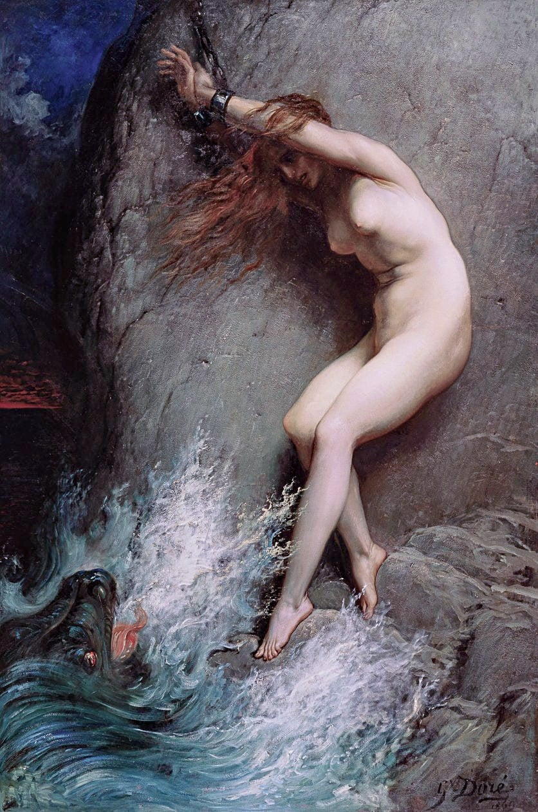
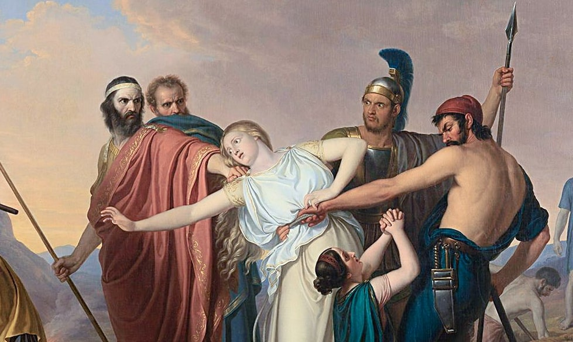
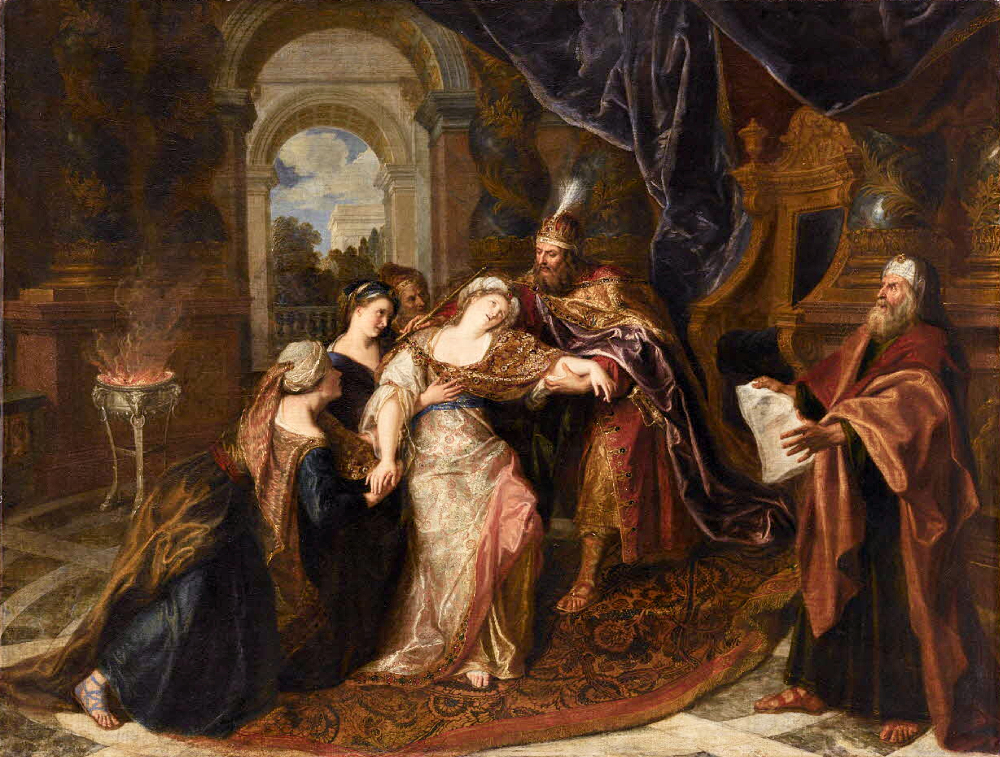
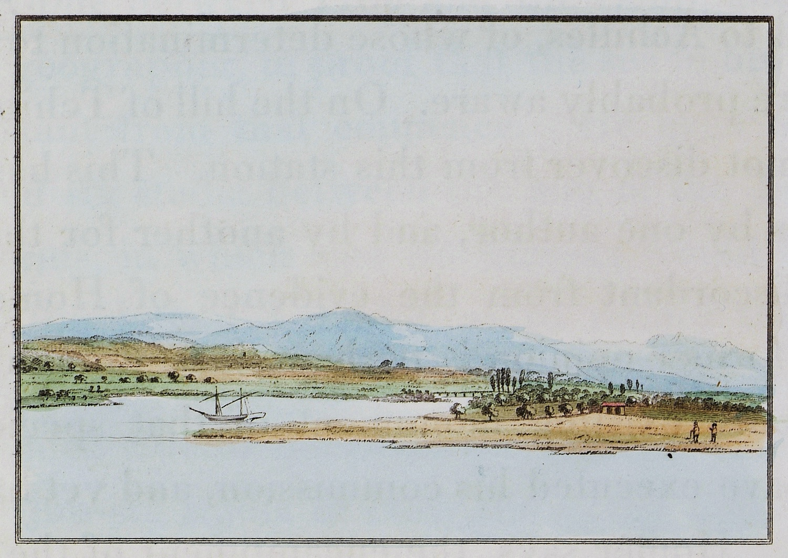
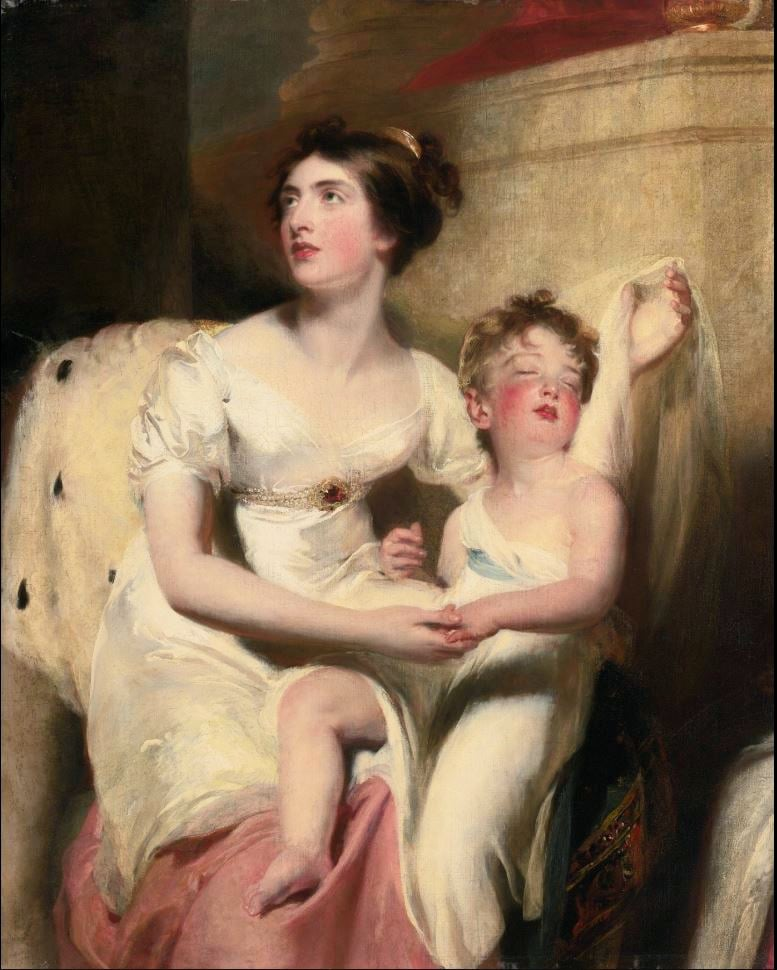

Canto IV

| Some selections from Canto III | ||
|---|---|---|
| The idyll continued: second Eden; "Thrice fortunate"; not meant to grow old; the language love; children they should have ever been; they fall asleep in each others’ arms. | They were alone once more; for them to be / Thus was another Eden. | VIII–XX |
| Haidée dreams she finds Juan dead in a marble cave; his face transforms to Lambro’s — she wakes. | She dreamed of being alone on the seashore, / Chained to a rock. | XXIX–XXXV |
| Haidée wakes to Lambro’s fixed gaze, hysterical shriek; His crew besiege the pair; Juan grabs a sabre; Haidée throws herself before Lambro’s gun. | ’Tis—’tis her father’s—fixed upon the pair! | XXXVI–XLII |
| Haidée’s defiance; Juan overpowered: Lambro whistles up his men; Juan, floored, bound and borne to the galliots. | She stood as one who championed human fears. | XLIII–L |
| Haidée’s collapses "like a cedar felled"; twelve days catatonic; a harp song unlocks memory then madness; dies without a groan; her unborn child with her; | For soon or late Love is his own avenger. | LVIII–LXXIII |
| On board the slave ship; Italian opera troupe sold by their own impresario; Raucocanti the buffo surveys his company in devastating insider gossip. | ’You’ve heard of Raucocanti? I’m the man.’ | LXXX–XC |
| Ravenna meditation: Byron scorns Murray’s censorship; Gaston de Foix’s broken pillar; Dante’s tomb. | I’ve stood upon Achilles’ tomb / And heard Troy doubted; time will doubt of Rome. | XCVII–CVI |
Berni, Orlando Innamorato, Libro Terzo, Canto 7, Stanza 14“Di sopra vi contai questa novella,
Quando smotato Orlando da cavallo
Chinossi a ber dell’onde cristalline,
Credo che fu de l’altro libro al fine.”
Nothing so difficult as a beginning
In poesy, unless perhaps the end;
For oftentimes when Pegasus seems winning
The race, he sprains a wing and down we tend,
Like Lucifer when hurled from heaven for sinning.
Our sin the same, and hard as his to mend,
Being pride, which leads the mind to soar too far,
. Till our own weakness shows us what we are.
But time, which brings all beings to their level,
And sharp adversity will teach at last
Man and as we would hope, perhaps the devil
That neither of their intellects are vast.
While youth's hot wishes in our red veins revel,
We know not this-the blood flows on too fast;
But as the torrent widens towards the ocean,
We ponder deeply on each past emotion.
As boy, I thought myself a clever fellow
And wished that others held the same opinion;
They took it up when my days grew more mellow,
And other minds acknowledged my dominion.
Now my sere fancy 'falls into the yellow
Leaf', and imagination droops her pinion;
And the sad truth which hovers o'er my desk
Turns what was once romantic to burlesque.
And if I laugh at any mortal thing,
'Tis that I may not weep; and if I weep,
'Tis that our nature cannot always bring
Itself to apathy, for we must steep
Our hearts first in the depths of Lethe's spring,
Ere what we least wish to behold will sleep.
Thetis baptized her mortal son in Styx;
A mortal mother would on Lethe fix.
Some have accused me of a strange design
Against the creed and morals of the land
And trace it in this poem every line.
I don't pretend that I quite understand
My own meaning when I would be very fine;
But the fact is that I have nothing planned,
Unless it were to be a moment merry,
A novel word in my vocabulary.
To the kind reader of our sober clime
This way of writing will appear exotic.
Pulci was sire of the half-serious rhyme,
Who sang when Chivalry was more Quixotic,
And revelled in the fancies of the time-
True knights, chaste dames, huge giants, kings despotic.
But all these, save the last, being obsolete,
I chose a modern subject as more meet.
How I have treated it, I do not know;
Perhaps no better than they have treated me
Who have imputed such designs as show
Not what they saw, but what they wished to see.
But if it gives them pleasure, be it so;
This is a liberal age, and thoughts are free.
Meantime Apollo plucks me by the ear
And tells me to resume my story here.
Young Juan and his ladylove were left
To their own hearts' most sweet society.
Even Time the pitiless in sorrow cleft
With his rude scythe such gentle bosoms. He
Sighed to behold them of their hours bereft,
Though foe to love. And yet they could not be
Meant to grow old, but die in happy spring,
. Before one charm or hope had taken wing.
Their faces were not made for wrinkles, their
Pure blood to stagnate, their great hearts to fail.
The blank grey was not made to blast their hair,
But like the climes that know nor snow nor hail
They were all summer. Lightning might assail
And shiver them to ashes, but to trail
A long and snake-like life of dull decay
Was not for them-they had too little clay.
They were alone once more; for them to be
Thus was another Eden. They were never
. Weary, unless when separate. The tree
Cut from its forest root of years, the river
Dammed from its fountain, the child from the knee
And breast maternal weaned at once forever
Would wither less than these two torn apart.
Alas, there is no instinct like the heart-
The heart-which may be broken. Happy they,
Thrice fortunate who of that fragile mould,
. The precious porcelain of human clay,
Break with the first fall. They can ne'er behold
The long year linked with heavy day on day
And all which must be borne and never told,
While life's strange principle will often lie
Deepest in those who long the most to die.
Whom the gods love `die young' was said of yore,
. And many deaths do they escape by this:
The death of friends and that which slays even more,
The death of friendship, love, youth, all that is,
Except mere breath. And since the silent shore
Awaits at last even those whom longest miss
The old archer's shafts, perhaps the early grave,
Which men weep over, may be meant to save.
Haid'ee and Juan thought not of the dead.
. The heavens and earth and air seemed made for them.
They found no fault with Time, save that he fled.
They saw not in themselves aught to condemn;
Each was the other's mirror, and but read
Joy sparkling in their dark eyes like a gem,
And knew such brightness was but the reflection
Of their exchanging glances of affection.
The gentle pressure and the thrilling touch,
The least glance better understood than words,
Which still said all and ne'er could say too much,
A language too, but like to that of birds,
. Known but to them, at least appearing such
As but to lovers a true sense affords,
Sweet playful phrases, which would seem absurd
To those who have ceased to hear such, or ne'er heard.
All these were theirs, for they were children still
And children still they should have ever been.
They were not made in the real world to fill
A busy character in the dull scene,
But like two beings born from out a rill,
A nymph and her belov`eed, all unseen
To pass their lives in fountains and on flowers
And never know the weight of human hours.
Moons changing had rolled on, and changeless found
Those their bright rise had lighted to such joys
As rarely they beheld throughout their round.
And these were not of the vain kind which cloys,
For theirs were buoyant spirits, never bound
By the mere senses. And that which destroys
Most love, possession, unto them appeared
A thing which each endearment more endeared.
Oh beautiful and rare as beautiful!
. But theirs was love in which the mind delights
To lose itself, when the old world grows dull
And we are sick of its hack sounds and sights,
Intrigues, adventures of the common school,
Its petty passions, marriages, and flights,
Where Hymen's torch but brands one strumpet more,
. Whose husband only knows her not a whore.
Hard words, harsh truth-a truth which many know.
Enough. The faithful and the fairy pair,
Who never found a single hour too slow,
What was it made them thus exempt from care?
Young innate feelings all have felt below,
Which perish in the rest, but in them were
Inherent; what we mortals call romantic
And always envy, though we deem it frantic.
This is in others a factitious state,
An opium dream of too much youth and reading,
. But was in them their nature or their fate.
No novels e'er had set their young hearts bleeding,
For Haid'ee's knowledge was by no means great,
And Juan was a boy of saintly breeding,
So that there was no reason for their loves
More than for those of nightingales or doves.
They gazed upon the sunset;'tis an hour
Dear unto all, but dearest to their eyes,
For it had made them what they were. The power
Of love had first o'erwhelmed them from such skies,
When happiness had been their only dower,
And twilight saw them linked in passion's ties.
Charmed with each other, all things charmed that brought
The past still welcome as the present thought.
I know not why, but in that hour tonight
. Even as they gazed, a sudden tremor came
And swept, as 'twere, across their heart's delight,
Like the wind o'er a harpstring or a flame,
When one is shook in sound, and one in sight;
And thus some boding flashed through either frame
And called from Juan's breast a faint low sigh,
While one new tear arose in Haid'ee's eye.
That large black prophet eye seemed to dilate
And follow far the disappearing sun,
As if their last day of a happy date
With his broad, bright, and dropping orb were gone.
Juan gazed on her as to ask his fate;
He felt a grief, but knowing cause for none,
His glance inquired of hers for some excuse
For feelings causeless, or at least abstruse.
She turned to him and smiled, but in that sort
Which makes not others smile, then turned aside.
Whatever feeling shook her, it seemed short
And mastered by her wisdom or her pride.
When Juan spoke too-it might be in sport-
Of this their mutual feeling, she replied,
'If it should be so, but-it cannot be-
Or I at least shall not survive to see.'
Juan would question further, but she pressed
His lip to hers and silenced him with this,
And then dismissed the omen from her breast,
Defying augury with that fond kiss.
And no doubt of all methods'tis the best;
Some people prefer wine-'tis not amiss.
I have tried both; so those who would a part take
May choose between the headache and the heartache.
One of the two, according to your choice,
Woman or wine, you'll have to undergo.
. Both maladies are taxes on our joys;
But which to choose, I really hardly know,
And if I had to give a casting voice,
For both sides I could many reasons show,
And then decide, without great wrong to either,
It were much better to have both than neither.
Juan and Haid'ee gazed upon each other
With swimming looks of speechless tenderness,
Which mixed all feelings, friend, child, lover, brother,
All that the best can mingle and express
When two pure hearts are poured in one another
And love too much and yet cannot love less,
But almost sanctify the sweet excess
By the immortal wish and power to bless.
Mixed in each other's arms and heart in heart,
Why did they not then die? They had lived too long
Should an hour come to bid them breathe apart.
Years could but bring them cruel things or wrong;
The world was not for them, nor the world's art
For beings passionate as Sappho's song.
. Love was born with them, in them, so intense,
It was their very spirit–not a sense.
They should have lived together deep in woods,
Unseen as sings the nightingale. They were
Unfit to mix in these thick solitudes
Called social, haunts of hate and vice and care.
How lonely every freeborn creature broods!
The sweetest songbirds nestle in a pair;
The eagle soars alone; the gull and crow
Flock o'er their carrion, just like men below.
Now pillowed cheek to cheek in loving sleep,
Haid'ee and Juan their siesta took,
A gentle slumber, but it was not deep,
For ever and anon a something shook
Juan and shuddering o'er his frame would creep;
And Haid'ee's sweet lips murmured like a brook
A wordless music, and her face so fair
Stirred with her dream as rose leaves with the air.
Or as the stirring of a deep clear stream
Within an Alpine hollow when the wind
Walks o'er it, was she shaken by the dream,
The mystical usurper of the mind,
O'erpowering us to be whate'er may seem
Good to the soul which we no more can bind.
Strange state of being (for'tis still to be),
Senseless to feel and with sealed eyes to see!
She dreamed of being alone on the seashore,
Chained to a rock. She knew not how, but stir
She could not from the spot, and the loud roar
Grew, and each wave rose roughly, threatening her,
And o'er her upper lip they seemed to pour,
Until she sobbed for breath, and soon they were
Foaming o'er her lone head, so fierce and high
Each broke to drown her, yet she could not die.

Anon she was released, and then she strayed
O'er the sharp shingles with her bleeding feet,
And stumbled almost every step she made.
And something rolled before her in a sheet,
Which she must still pursue howe'er afraid.
'Twas white and indistinct, nor stopped to meet
Her glance nor grasp, for still she gazed and grasped
And ran, but it escaped her as she clasped.
The dream changed. In a cave she stood, its walls
Were hung with marble icicles, the work
Of ages on its water-fretted halls,
Where waves might wash, and seals might breed and lurk.
Her hair was dripping, and the very balls
Of her black eyes seemed turned to tears, and murk
The sharp rocks looked below each drop they caught,
Which froze to marble as it fell, she thought.
And wet and cold and lifeless at her feet,
Pale as the foam that frothed on his dead brow,
Which she essayed in vain to clear (how sweet
Were once her cares, how idle seemed they now),
Lay Juan, nor could aught renew the beat
Of his quenched heart. And the sea dirges low
Rang in her sad ears like a mermaid's song,
And that brief dream appeared a life too long.
And gazing on the dead, she thought his face
Faded, or altered into something new,
Like to her father's features, till each trace
More like and like to Lambro's aspect grew
With all his keen worn look and Grecian grace.
And starting, she awoke, and what to view?
Oh powers of heaven! What dark eye meets she there?
'Tis-'tis her father's-fixed upon the pair!
Then shrieking, she arose and shrieking fell,
With joy and sorrow, hope and fear, to see
Him whom she deemed a habitant where dwell
The ocean-buried, risen from death, to be
Perchance the death of one she loved too well.
Dear as her father had been to Haid'ee,
It was a moment of that awful kind-
I have seen such, but must not call to mind.
Up Juan sprung to Haid'ee's bitter shriek
And caught her falling, and from off the wall
Snatched down his sabre in hot haste to wreak
Vengeance on him who was the cause of all.
Then Lambro, who till now forbore to speak,
Smiled scornfully and said, 'Within my call,
A thousand scimitars await the word.
Put up, young man, put up your silly sword.'
And Haid'ee clung around him. 'Juan,'tis-
'Tis Lambro-'tis my father! Kneel with me-
He will forgive us-yes-it must be-yes.
Oh dearest father, in this agony
Of pleasure and of pain, even while I kiss
Thy garment's hem with transport, can it be
That doubt should mingle with my filial joy?
Deal with me as thou wilt, but spare this boy.'
High and inscrutable the old man stood,
Calm in his voice and calm within his eye,
Not always signs with him of calmest mood.
He looked upon her, but gave no reply,
Then turned to Juan, in whose cheek the blood
Oft came and went, as there resolved to die.
In arms, at least, he stood in act to spring
On the first foe whom Lambro's call might bring.
'Young man, your sword,' so Lambro once more said.
Juan replied, 'Not while this arm is free.'
The old man's cheek grew pale, but not with dread,
And drawing from his belt a pistol, he
Replied, 'Your blood be then on your own head,'
Then looked close at the flint, as if to see
'Twas fresh-for he had lately used the lock-
And next proceeded quietly to cock.
It has a strange quick jar upon the ear,
That cocking of a pistol, when you know
A moment more will bring the sight to bear
Upon your person, twelve yards off or so,
A gentlemanly distance, not too near,
If you have got a former friend for foe,
But after being fired at once or twice,
The ear becomes more Irish, and less nice.
Lambro presented, and one instant more
Had stopped this canto and Don Juan's breath,
When Haid'ee threw herself her boy before,
Stern as her sire. 'On me,' she cried, 'let death
Descend, the fault is mine. This fatal shore
He found, but sought not. I have pledged my faith.
I love him, I will die with him. I knew
Your nature's firmness-know your daughter's too.'
A minute past, and she had been all tears
And tenderness and infancy, but now
She stood as one who championed human fears.
Pale, statue-like, and stern, she wooed the blow;
And tall beyond her sex and their compeers,
She drew up to her height, as if to show
A fairer mark, and with a fixed eye scanned
Her father's face, but never stopped his hand.
He gazed on her, and she on him.'Twas strange
How like they looked. The expression was the same,
Serenely savage, with a little change
In the large dark eye's mutual-darted flame,
For she too was as one who could avenge,
If cause should be - a lioness, though tame.
Her father's blood before her father's face
Boiled up and proved her truly of his race.

I said they were alike, their features and
Their stature differing but in sex and years;
Even to the delicacy of their hand
There was resemblance, such as true blood wears.
And now to see them, thus divided, stand
In fixed ferocity, when joyous tears
And sweet sensations should have welcomed both,
Show what the passions are in their full growth.
The father paused a moment, then withdrew
His weapon and replaced it, but stood still,
And looking on her, as to look her through,
'Not I,' he said, 'have sought this stranger's ill;
Not I have made this desolation. Few
Would bear such outrage and forbear to kill,
But I must do my duty. How thou hast
Done thine, the present vouches for the past.
'Let him disarm, or by my father's head,
His own shall roll before you like a ball.'
He raised his whistle, as the word he said,
And blew. Another answered to the call,
And rushing in disorderly, though led,
And armed from boot to turban, one and all,
Some twenty of his train came rank on rank.
He gave the word, 'Arrest or slay the Frank.'
Then with a sudden movement, he withdrew
His daughter, while compressed within his clasp.
'Twixt her and Juan interposed the crew.
In vain she struggled in her father's grasp;
His arms were like a serpent's coil. Then flew
Upon their prey, as darts an angry asp,
The file of pirates, save the foremost, who
Had fallen with his right shoulder half cut through.
The second had his cheek laid open, but
The third, a wary, cool old sworder, took
The blows upon his cutlass, and then put
His own well in, so well ere you could look
His man was floored and helpless at his foot
With the blood running like a little brook
From two smart sabre gashes, deep and red -
One on the arm, the other on the head.
And then they bound him where he fell and bore
Juan from the apartment. With a sign
Old Lambro bade them take him to the shore,
Where lay some ships which were to sail at nine.
They laid him in a boat and plied the oar
Until they reached some galliots, placed in line.
. On board of one of these and under hatches
They stowed him with strict orders to the watches.
The world is full of strange vicissitudes,
And here was one exceedingly unpleasant:
A gentleman so rich in the world's goods,
Handsome and young, enjoying all the present,
Just at the very time when he least broods
On such a thing is suddenly to sea sent,
Wounded and chained, so that he cannot move,
And all because a lady fell in love.
Here I must leave him, for I grow pathetic,
Moved by the Chinese nymph of tears, green tea,
. Than whom Cassandra was not more prophetic;
For if my pure libations exceed three,
I feel my heart become so sympathetic
That I must have recourse to black Bohea.
'Tis pity wine should be so deleterious,
For tea and coffee leave us much more serious,
Unless when qualified with thee, cognac,
Sweet naiad of the Phlegethontic rill!
. Ah, why the liver wilt thou thus attack
And make, like other nymphs, thy lovers ill?
I would take refuge in weak punch, but rack
(In each sense of the word), whene'er I fill
My mild and midnight beakers to the brim,
Wakes me next morning with its synonym.
I leave Don Juan for the present, safe,
Not sound, poor fellow, but severely wounded.
Yet could his corporal pangs amount to half
Of those with which his Haid'ee's bosom bounded!
She was not one to weep and rave and chafe
And then give way, subdued because surrounded.
Her mother was a Moorish maid from Fez,
Where all is Eden, or a wilderness.
There the large olive rains its amber store
In marble fonts; there grain and flower and fruit
Gush from the earth until the land runs o'er;
But there too many a poison-tree has root,
And midnight listens to the lion's roar,
And long, long deserts scorch the camel's foot
Or heaving whelm the helpless caravan.
And as the soil is, so the heart of man.
Afric is all the sun's, and as her earth
Her human clay is kindled. Full of power
For good or evil, burning from its birth,
The Moorish blood partakes the planet's hour,
And like the soil beneath it will bring forth.
Beauty and love were Haid'ee's mother's dower,
But her large dark eye showed deep passion's force,
Though sleeping like a lion near a source.
Her daughter, tempered with a milder ray -
Like summer clouds all silvery, smooth, and fair,
Till slowly charged with thunder they display
Terror to earth and tempest to the air -
Had held till now her soft and milky way,
But overwrought with passion and despair,
The fire burst forth from her Numidian veins,
Even as the simoom sweeps the blasted plains.
The last sight which she saw was Juan's gore,
And he himself o'ermastered and cut down;
His blood was running on the very floor
Where late he trod, her beautiful, her own.
Thus much she viewed an instant and no more;
Her struggles ceased with one convulsive groan.
On her sire's arm, which until now scarce held
Her writhing, fell she like a cedar felled.
A vein had burst, and her sweet lips' pure dyes
Were dabbled with the deep blood which ran o'er;
And her head drooped as when the lily lies
O'ercharged with rain. Her summoned handmaids bore
Their lady to her couch with gushing eyes.
Of herbs and cordials they produced their store,
But she defied all means they could employ,
Like one life could not hold, nor death destroy.

Days lay she in that state unchanged; though chill
With nothing livid, still her lips were red.
She had no pulse, but death seemed absent still.
No hideous sign proclaimed her surely dead;
Corruption came not in each mind to kill
All hope. To look upon her sweet face bred
New thoughts of life, for it seemed full of soul;
She had so much, earth could not claim the whole.
The ruling passion, such as marble shows
. When exquisitely chiselled, still lay there,
But fixed as marble's unchanged aspect throws
O'er the fair Venus, but forever fair,
. O'er the Laocoon's all eternal throes,
And ever-dying Gladiator's air.
Their energy like life forms all their fame,
Yet looks not life, for they are still the same.
She woke at length, but not as sleepers wake,
Rather the dead, for life seemed something new,
A strange sensation which she must partake
Perforce, since whatsoever met her view
Struck not on memory, though a heavy ache
Lay at her heart, whose earliest beat still true
Brought back the sense of pain without the cause,
For, for a while, the Furies made a pause.
She looked on many a face with vacant eye,
On many a token without knowing what;
She saw them watch her without asking why,
And recked not who around her pillow sat.
Not speechless though she spoke not; not a sigh
Relieved her thoughts. Dull silence and quick chat
Were tried in vain by those who served; she gave
No sign, save breath, of having left the grave.
Her handmaids tended, but she heeded not;
Her father watched, she turned her eyes away.
She recognized no being and no spot
However dear or cherished in their day.
They changed from room to room, but all forgot;
Gentle, but without memory she lay.
At length those eyes, which they would fain be weaning
Back to old thoughts, waxed full of fearful meaning.
And then a slave bethought her of a harp;
The harper came and tuned his instrument.
At the first notes, irregular and sharp,
On him her flashing eyes a moment bent,
Then to the wall she turned as if to warp
Her thoughts from sorrow through her heart re-sent,
And he begun a long low island song
Of ancient days, ere tyranny grew strong.
Anon her thin wan fingers beat the wall
In time to his old tune. He changed the theme
And sung of love. The fierce name struck through all
Her recollection; on her flashed the dream
Of what she was and is, if ye could call
To be so being. In a gushing stream
The tears rushed forth from her o'erclouded brain,
Like mountain mists at length dissolved in rain.
Short solace, vain relief! Thought came too quick
And whirled her brain to madness. She arose
As one who ne'er had dwelt among the sick
And flew at all she met, as on her foes.
But no one ever heard her speak or shriek,
Although her paroxysm drew towards its close;
Hers was a frenzy which disdained to rave,
Even when they smote her in the hope to save.
Yet she betrayed at times a gleam of sense.
Nothing could make her meet her father's face,
Though on all other things with looks intense
She gazed, but none she ever could retrace. Food she refused and raiment; no pretence
Availed for either. Neither change of place
Nor time nor skill nor remedy could give her
Senses to sleep - the power seemed gone forever.
Twelve days and nights she withered thus. At last
Without a groan or sigh or glance to show
A parting pang, the spirit from her past.
And they who watched her nearest could not know
The very instant, till the change that cast
Her sweet face into shadow, dull and slow,
Glazed o'er her eyes, the beautiful, the black.
Oh to possess such lustre - and then lack!
She died, but not alone; she held within
A second principle of life, which might
Have dawned a fair and sinless child of sin,
. But closed its little being without light
And went down to the grave unborn, wherein
Blossom and bough lie withered with one blight.
In vain the dews of heaven descend above
The bleeding flower and blasted fruit of love.
Thus lived, thus died she. Never more on her
Shall sorrow light or shame. She was not made
Through years or moons the inner weight to bear,
Which colder hearts endure till they are laid
By age in earth. Her days and pleasures were
Brief, but delightful, such as had not stayed
Long with her destiny. But she sleeps well
By the seashore, whereon she loved to dwell.
That isle is now all desolate and bare,
Its dwellings down, its tenants past away;
None but her own and father's grave is there,
And nothing outward tells of human clay.
Ye could not know where lies a thing so fair;
No stone is there to show, no tongue to say
What was. No dirge, except the hollow sea's,
Mourns o'er the beauty of the Cyclades.
But many a Greek maid in a loving song
Sighs o'er her name; and many an islander
With her sire's story makes the night less long.
Valour was his, and beauty dwelt with her.
If she loved rashly, her life paid for wrong;
A heavy price must all pay who thus err,
In some shape. Let none think to fly the danger,
For soon or late Love is his own avenger.
But let me change this theme, which grows too sad,
And lay this sheet of sorrows on the shelf.
I don't much like describing people mad,
For fear of seeming rather touched myself.
Besides I've no more on this head to add;
And as my Muse is a capricious elf,
We'll put about and try another tack
. With Juan, left half-killed some stanzas back.
Wounded and fettered, 'cabined, cribbed, confined',
. Some days and nights elapsed before that he
Could altogether call the past to mind;
And when he did, he found himself at sea,
Sailing six knots an hour before the wind.
The shores of Ilion lay beneath their lee;
Another time he might have liked to see'em,
But now was not much pleased with Cape Sigeum.
There on the green and village-cotted hill is
(Flanked by the Hellespont and by the sea)
Entombed the bravest of the brave, Achilles;
They say so (Bryant says the contrary).
. And further downward, tall and towering still, is
The tumulus - of whom? Heaven knows;'t may be
Patroclus, Ajax, or Protesilaus,
. All heroes who if living still would slay us.
High barrows without marble or a name,
A vast, untilled, and mountain-skirted plain,
And Ida in the distance, still the same,
And old Scamander (if'tis he) remain.
The situation seems still formed for fame.
A hundred thousand men might fight again
With ease; but where I sought for Ilion's walls,
The quiet sheep feeds, and the tortoise crawls,

Troops of untended horses, here and there
Some little hamlets with new names uncouth,
Some shepherds (unlike Paris) led to stare
A moment at the European youth,
Whom to the spot their schoolboy feelings bear,
A Turk with beads in hand and pipe in mouth,
Extremely taken with his own religion,
Are what I found there - but the devil a Phrygian.
Don Juan, here permitted to emerge
From his dull cabin, found himself a slave,
Forlorn and gazing on the deep blue surge,
O'ershadowed there by many a hero's grave.
Weak still with loss of blood, he scarce could urge
A few brief questions; and the answers gave
No very satisfactory information
About his past or present situation.
He saw some fellow captives, who appeared
To be Italians, as they were in fact.
From them at least their destiny he heard,
Which was an odd one. A troop going to act
In Sicily, all singers, duly reared
In their vocation, had not been attacked
In sailing from Livorno by the pirate,
But sold by the impresario at no high rate.
By one of these, the buffo of the party,
. Juan was told about their curious case.
For although destined to the Turkish mart, he
Still kept his spirits up - at least his face;
The little fellow really looked quite hearty
And bore him with some gaiety and grace,
Showing a much more reconciled demeanour
Than did the prima donna and the tenor.
In a few words he told their hapless story,
Saying, 'Our Machiavelian impresario,
Making a signal off some promontory,
Hailed a strange brig. Corpo di Caio Mario!
We were transferred on board her in a hurry
Without a single scudo of salario,
But if the Sultan has a taste for song,
We will revive our fortunes before long.
'The prima donna, though a little old
And haggard with a dissipated life
And subject, when the house is thin, to cold,
Has some good notes; and then the tenor's wife,
With no great voice, is pleasing to behold.
Last carnival she made a deal of strife
By carrying off Count Cesare Cicogna
From an old Roman princess at Bologna.
'And then there are the dancers: there's the Nini
With more than one profession gains by all.
Then there's that laughing slut the Pelegrini;
She too was fortunate last carnival
And made at least five hundred good zecchini,
. But spends so fast, she has not now a paul.
And then there's the Grotesca - such a dancer!
Where men have souls or bodies she must answer.
'As for the figuranti, they are like
The rest of all that tribe with here and there
A pretty person, which perhaps may strike;
The rest are hardly fitted for a fair.
There's one, though tall and stiffer than a pike,
Yet has a sentimental kind of air
Which might go far, but she don't dance with vigour,
The more's the pity, with her face and figure.
'As for the men, they are a middling set.
The Musico is but a cracked old basin,
But being qualified in one way yet,
May the seraglio do to set his face in
And as a servant some preferment get.
His singing I no further trust can place in.
From all the pope makes yearly'twould perplex
To find three perfect pipes of the third sex.
'The tenor's voice is spoilt by affectation,
And for the bass, the beast can only bellow;
In fact he had no singing education,
An ignorant, noteless, timeless, tuneless fellow,
But being the prima donna's near relation,
Who swore his voice was very rich and mellow,
They hired him, though to hear him you'd believe
An ass was practising recitative.
”Twould not become myself to dwell upon
My own merits, and though young, I see, sir, you
Have got a travelled air, which shows you one
To whom the opera is by no means new.
You've heard of Raucocanti? I'm the man;
The time may come when you may hear me too.
You was not last year at the fair of Lugo?
But next, when I'm engaged to sing there - do go.
'Our baritone I almost had forgot,
A pretty lad, but bursting with conceit.
With graceful action, science not a jot,
A voice of no great compass and not sweet,
He always is complaining of his lot,
Forsooth, scarce fit for ballads in the street.
In lovers' parts his passion more to breathe,
Having no heart to show, he shows his teeth.'
Here Raucocanti's eloquent recital
Was interrupted by the pirate crew,
Who came at stated moments to invite all
The captives back to their sad berths. Each threw
A rueful glance upon the waves (which bright all
From the blue skies derived a double blue,
Dancing all free and happy in the sun)
And then went down the hatchway one by one.
They heard next day that in the Dardanelles,
Waiting for his sublimity's firm\'an,
. The most imperative of sovereign spells,
Which everybody does without who can,
More to secure them in their naval cells,
Lady to lady, well as man to man,
Were to be chained and lotted out per couple
For the slave market of Constantinople.
It seems when this allotment was made out,
There chanced to be an odd male and odd female,
Who (after some discussion and some doubt,
If the soprano might be deemed to be male,
They placed him o'er the women as a scout)
Were linked together, and it happened the male
Was Juan, who - an awkward thing at his age -
Paired off with a bacchante blooming visage.
With Raucocanti lucklessly was chained
The tenor. These two hated with a hate
Found only on the stage, and each more pained
With this his tuneful neighbour than his fate.
Sad strife arose, for they were so cross-grained,
Instead of bearing up without debate,
That each pulled different ways with many an oath,
Arcades ambo, id est blackguards both.
Juan's companion was a Romagnole,
. But bred within the March of old Ancona,
With eyes that looked into the very soul
(And other chief points of a bella donna),
. Bright and as black and burning as a coal.
And through her clear brunette complexion shone a
Great wish to please, a most attractive dower,
Especially when added to the power.
But all that power was wasted upon him,
. For sorrow o'er each sense held stern command.
Her eye might flash on his, but found it dim.
And though thus chained, as natural her hand
Touched his, nor that nor any handsome limb
(And she had some not easy to withstand)
Could stir his pulse or make his faith feel brittle.
Perhaps his recent wounds might help a little.
No matter. We should ne'er too much inquire,
But facts are facts, no knight could be more true,
And firmer faith no ladylove desire.
We will omit the proofs, save one or two.
'Tis said no one in hand 'can hold a fire
. By thought of frosty Caucasus', but few
I really think; yet Juan's then ordeal
Was more triumphant, and not much less real.
Here I might enter on a chaste description,
Having withstood temptation in my youth,
. But hear that several people take exception
At the first two books having too much truth.
Therefore I'll make Don Juan leave the ship soon,
Because the publisher declares in sooth,
Through needles' eyes it easier for the camel is
. To pass than those two cantos into families.
'Tis all the same to me; I'm fond of yielding
And therefore leave them to the purer page
Of Smollett, Prior, Ariosto, Fielding,
. Who say strange things for so correct an age.
I once had great alacrity in wielding
My pen and liked poetic war to wage
And recollect the time when all this cant
Would have provoked remarks, which now it shan't
As boys love rows, my boyhood liked a squabble,
But at this hour I wish to part in peace,
Leaving such to the literary rabble,
Whether my verse's fame be doomed to cease,
While the right hand which wrote it still is able,
Or of some centuries to take a lease.
The grass upon my grave will grow as long
And sigh to midnight winds, but not to song.
Of poets who come down to us through distance
Of time and tongues, the foster babes of Fame,
Life seems the smallest portion of existence.
Where twenty ages gather o'er a name,
'Tis as a snowball which derives assistance
From every flake and yet rolls on the same,
Even till an iceberg it may chance to grow,
But after all'tis nothing but cold snow.
And so great names are nothing more than nominal,
And love of glory's but an airy lust,
Too often in its fury overcoming all
Who would as'twere identify their dust
From out the wide destruction, which, entombing all,
Leaves nothing 'till the coming of the just',
Save change. I've stood upon Achilles' tomb
And heard Troy doubted; time will doubt of Rome.
The very generations of the dead
Are swept away and tomb inherits tomb
Until the memory of an age is fled
And, buried, sinks beneath its offspring's doom.
Where are the epitaphs our fathers read?
Save a few gleaned from the sepulchral gloom,
Which once-named myriads nameless lie beneath
And lose their own in universal death.
I canter by the spot each afternoon
Where perished in his fame the hero-boy,
Who lived too long for men, but died too soon
For human vanity, the young De Foix.
A broken pillar, not uncouthly hewn,
But which neglect is hastening to destroy,
Records Ravenna's carnage on its face,
While weeds and ordure rankle round the base.
I pass each day where Dante's bones are laid
A little cupola, more neat than solemn,
Protects his dust, but reverence here is paid
To the bard's tomb, and not the warrior's column.
The time must come, when both alike decayed,
The chieftain's trophy and the poet's volume
Will sink where lie the songs and wars of earth
Before Pelides' death or Homer's birth.
With human blood that column was cemented,
With human filth that column is defiled,
As if the peasant's coarse contempt were vented
To show his loathing of the spot he soiled.
Thus is the trophy used, and thus lamented
Should ever be those bloodhounds, from whose wild
Instinct of gore and glory earth has known
Those sufferings Dante saw in hell alone.
Yet there will still be bards. Though fame is smoke,
Its fumes are frankincense to human thought;
And the unquiet feelings, which first woke
Song in the world, will seek what then they sought.
As on the beach the waves at last are broke,
Thus to their extreme verge the passions brought
Dash into poetry, which is but passion,
Or at least was so ere it grew a fashion.
If in the course of such a life as was
At once adventurous and contemplative,
. Men who partake all passions as they pass
Acquire the deep and bitter power to give
Their images again as in a glass,
And in such colours that they seem to live.
You may do right forbidding them to show'em,
But spoil (I think) a very pretty poem.
Oh ye, who make the fortunes of all books,
Benign ceruleans of the second sex!
. Who advertise new poems by your looks,
Your imprimatur will ye not annex?
What, must I go to the oblivious cooks,
Those Cornish plunderers of Parnassian wrecks?
Ah, must I then the only minstrel be
Proscribed from tasting your Castalian tea?
What, can I prove a lion then no more?
. A ballroom bard, a foolscap, hot-press darling?
To bear the compliments of many a bore
And sigh, 'I can't get out', like Yorick's starling.
. Why then I'll swear, as poet Wordy swore
. (Because the world won't read him, always snarling),
That taste is gone, that fame is but a lottery,
Drawn by the bluecoat misses of a coterie.
Oh `darkly, deeply, beautifully blue',
. As someone somewhere sings about the sky,
And I, ye learn`ed ladies, say of you.
They say your stockings are so (heaven knows why,
I have examined few pair of that hue),
Blue as the garters which serenely lie
. Round the patrician left legs, which adorn
The festal midnight and the levee morn.
Yet some of you are most seraphic creatures,
But times are altered since, a rhyming lover
You read my stanzas, and I read your features;
And - but no matter, all those things are over.
Still I have no dislike to learn`ed natures,
For sometimes such a world of virtues cover.
I know one woman of that purple school,
The loveliest, chastest, best, but - quite a fool.

Humboldt, 'the first of travellers', but not
. The last, if late accounts be accurate,
Invented, by some name I have forgot,
As well as the sublime discovery's date,
An airy instrument, with which he sought
To ascertain the atmospheric state,
By measuring the intensity of blue.
Oh Lady Daphne, let me measure you!
But to the narrative. The vessel bound
With slaves to sell off in the capital,
After the usual process, might be found
At anchor under the seraglio wall.
. Her cargo, from the plague being safe and sound,
Were landed in the market, one and all,
And there with Georgians, Russians, and Circassians,
. Bought up for different purposes and passions.
Some went off dearly; fifteen hundred dollars
For one Circassian, a sweet girl, were given,
Warranted virgin. Beauty's brightest colours
Had decked her out in all the hues of heaven.
Her sale sent home some disappointed bawlers,
Who bade on till the hundreds reached eleven,
But when the offer went beyond, they knew
'Twas for the Sultan and at once withdrew.
Twelve negresses from Nubia brought a price
Which the West Indian market scarce would bring,
Though Wilberforce at last has made it twice
. What 'twas ere abolition; and the thing
Need not seem very wonderful, for vice
Is always much more splendid than a king.
The virtues, even the most exalted, charity,
Are saving; vice spares nothing for a rarity.
But for the destiny of this young troop,
How some were bought by pashas, some by Jews,
How some to burdens were obliged to stoop,
And others rose to the command of crews
As renegadoes; while in hapless group,
Hoping no very old vizier might choose,
The females stood, as one by one they picked'em,
To make a mistress or fourth wife or victim -
All this must be reserved for further song,
Also our hero's lot, howe'er unpleasant
(Because this canto has become too long),
Must be postponed discreetly for the present.
I'm sensible redundancy is wrong,
But could not for the Muse of me put less in't
And now delay the progress of Don Juan
Till what is called in Ossian the fifth duan.
.